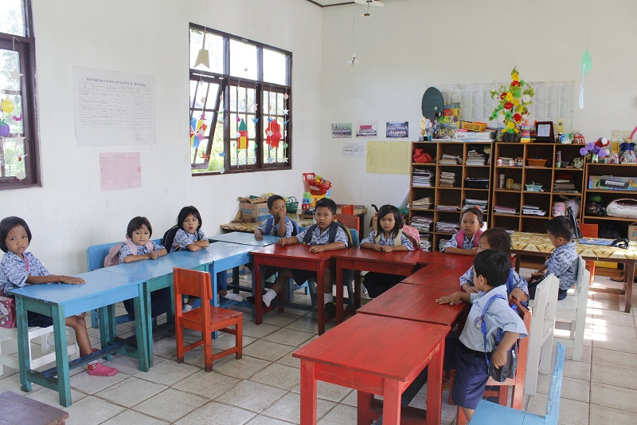
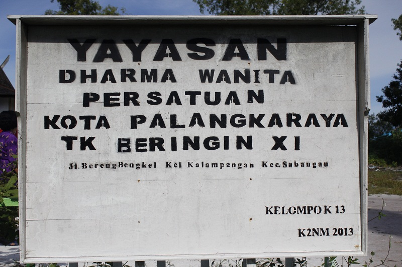

Beranda /
Pendidikan / TK
Profil satuan pendidikan
TK Aisyiyah Busthanul Atfal Bereng Bengkel
TK · Swasta · Bereng Bengkel, Kecamatan Sabangau
Galeri sekolah
Dokumentasi lingkungan sekolah
Dokumentasi gedung, ruang kelas, kegiatan, dan fasilitas sekolah.



Foto 1 dari 3
Identitas sekolah
| Nama sekolah | TK Aisyiyah Busthanul Atfal Bereng Bengkel |
| Jenjang | TK |
| Status | Swasta |
| NPSN | 30204659 |
| Alamat | Bereng Bengkel, Kecamatan Sabangau, Kota Palangka Raya, Kalimantan Tengah |
| Akreditasi | Perlu verifikasi data terbaru |
Lokasi sekolah
Buka petunjuk Google Maps ↗Data pendidikan
Bagian ini disiapkan untuk menampilkan jumlah peserta didik, rombongan belajar, guru, tenaga kependidikan, kurikulum, dan sarana prasarana setelah data resmi terverifikasi.
Data statistik belum diisi agar tidak menampilkan angka yang
belum terkonfirmasi.
Sumber data resmi
Gunakan profil Kemendikdasmen sebagai rujukan identitas dan data sekolah.
Buka profil Kemendikdasmen ↗Profil resmi TK di Kemendikdasmen